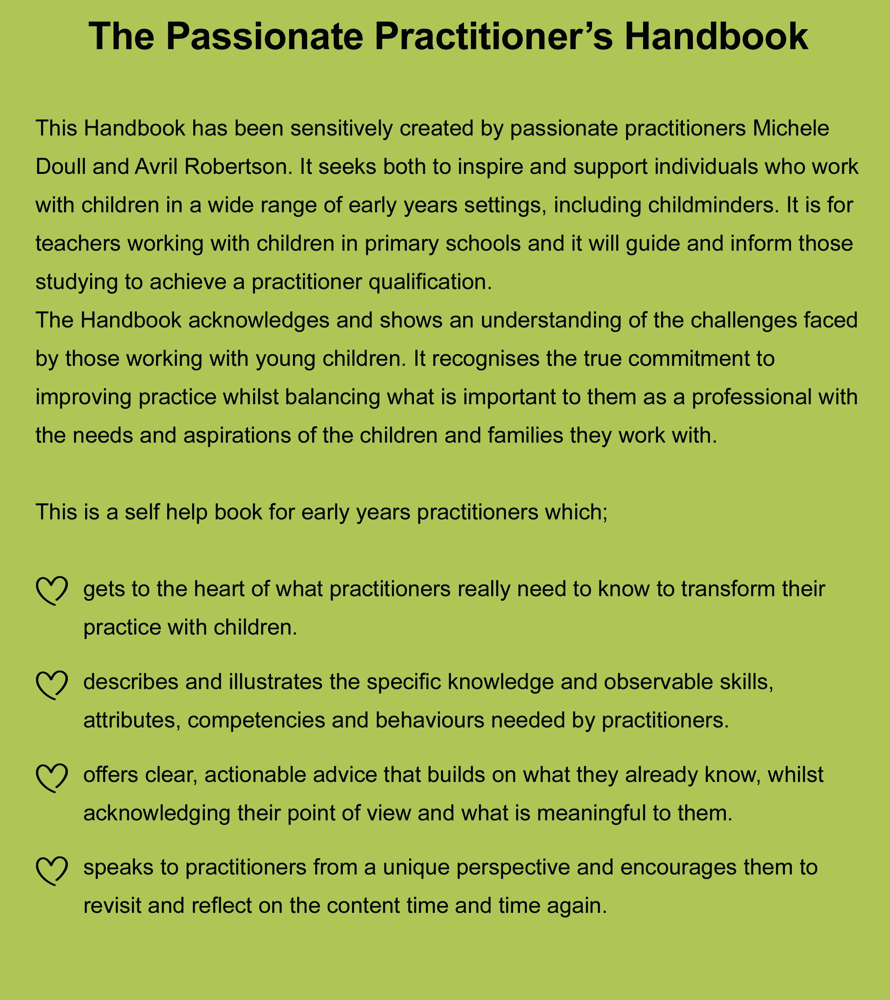

The Passionate Practitioner Handbook: How to Transform and Inspire Your Early Years Practice

"What I love about this beautiful book is that the authors write from the heart, showing their deep connection with, and understanding of, the role of the early years professional. The tone and the key messages within this handbook take careful account of the realities of everyday life in an early years setting. This is a book that says it as it is!"
Jean Carwood-Edwards Professional Adviser to Scottish Government
"The authors Michele and Avril have come together to write this informative handbook for the early years workforce. Their in-depth knowledge of what is important for children and practitioners is evident throughout the book and, while written for the early years sector in Scotland, the ideas are internationally applicable"
Associate Professor Sally Peters Te Kura Toi Tangata School of Education, University of Waikato